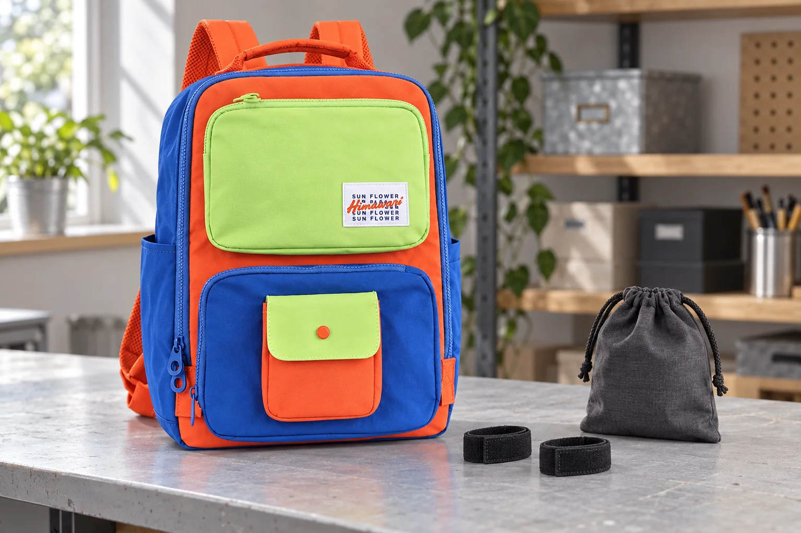

백팩 속 찍찍이 밴드, 열린 갈고리 면부터 정리하기

잠깐 풀어 쓴 찍찍이 밴드를 백팩에 넣다가 안감에 붙는 느낌이 들 수 있습니다. 작은 소품이라 대수롭지 않게 잡아당기기 전에 어느 면이 닿았는지 살펴보세요. 이 글은 밴드로 물건을 단단히 묶는 방법보다, 사용하고 남은 접착 면을 정리하는 순서에 집중합니다.
거친 면과 부드러운 면을 구분합니다
일반적인 찍찍이는 작은 갈고리 면과 고리 형태의 부드러운 면이 짝을 이룹니다. VELCRO의 구조 설명도 갈고리와 섬유 고리가 맞물리는 방식을 안내합니다. 사용하는 소품의 모양은 제품마다 다르므로 두 면이 어디에 있는지 직접 확인하세요. 밴드를 열어 둔 채 다른 천과 겹쳐 넣기 전에 노출된 부분부터 찾아봅니다.
밴드의 짝이 되는 면끼리 닫습니다
사용을 마친 밴드는 원래 붙도록 만들어진 면끼리 맞춥니다. 접거나 감는 구조라면 안내된 방향대로 닫고, 끝부분이 밖으로 남아 있는지 봅니다. 짝이 되는 면이 따로 있는 부품은 함께 보관하세요. 가방 안감을 밴드의 부착 면처럼 사용하거나, 잘 붙지 않는다고 강하게 문질러 고정하지 않습니다. 가방에 찍찍이를 새로 접착하거나 봉제하는 작업도 이 정리 방법에 포함되지 않습니다.
닿아 버렸다면 당기는 동작을 멈춥니다
소품을 꺼낼 때 한곳이 붙잡힌 느낌이 나면 가방과 소품을 함께 살펴봅니다. 안감이 따라오는 상태로 계속 끌어내지 않고, 물건의 무게를 받친 뒤 맞닿은 부분이 보이도록 천천히 분리합니다. 실이 걸리거나 풀린 곳을 발견했다면 가위로 잘라 정리하기보다 상태를 확인하고 필요한 경우 수선 문의를 준비하세요. 안감 손상이 없다고 보장하는 특정 밴드나 분리법을 제시하는 것은 아닙니다.
별도 소품의 보관 안내를 먼저 따릅니다
밴드가 열린 상태로 되돌아오는 물건이라면 필요한 경우 별도 천주머니에 넣고, 주머니에 걸리는 부분도 확인합니다. 닫기 전 붙은 먼지나 실을 발견했을 때는 밴드 제조사의 관리 안내를 따릅니다. 사진의 No.8029은 가로 27 × 세로 39 × 폭 14cm이며 파랑 테두리, 주황 몸체와 라임색 포켓을 실제 블루라임 옵션 원본에 맞췄습니다. 검정 밴드는 별도 소품이고 이 백팩에 해당 고정 기능이 있다는 뜻은 아닙니다.
참고·안내
- Himawari No.8029 제품 정보
- 실제 Himawari No.8029 블루라임 원본을 참조한 AI 연출 사진입니다. 찍찍이 밴드와 천주머니는 별도 소품이며 가방에 추가된 기능이나 구성품이 아닙니다.
자주 묻는 질문
찍찍이 밴드를 백팩 안감에 붙여 물건을 고정해도 되나요?
안감이 밴드의 짝이 되는 고정 면인지 확인되지 않았으므로 그렇게 사용하지 않습니다. 밴드 자체의 원래 두 면을 닫아 정리하세요.
밴드를 담은 천주머니면 걸림을 완전히 막을 수 있나요?
주머니 재질과 밴드 모양에 따라 다릅니다. 밴드를 먼저 닫고 주머니에도 걸리는 부분이 없는지 직접 확인해야 합니다.